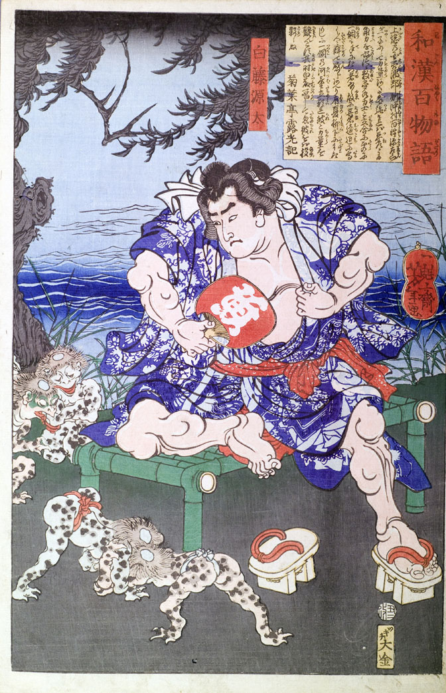

力士白藤源太が川岸で涼みながら、相撲を取る河童たちを眺めている。
著作者：一魁齋芳年（月岡芳年）／出典：親書誌：U426_nichibunken_0136：白藤源太；シラフジゲンタ／日付：2009／資源識別子：U426_nichibunken_0136_0001_0000
Copyright (c)2010- International Research Center for Japanese Studies, Kyoto, Japan. All rights reserved.